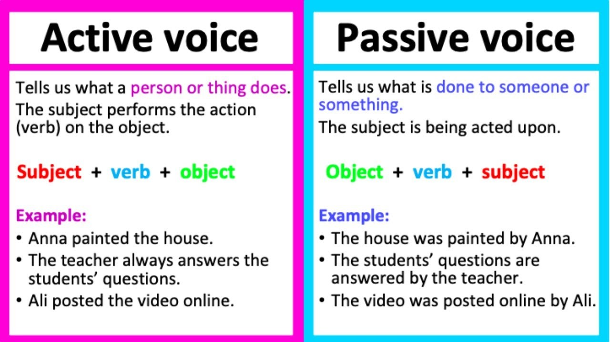

- Home
- PJOK
- Informatika
- Biologi
- Inggris
-
Sejarah
Fungsi passive sentence
Kalimat pasif atau passive voice digunakan untuk menunjukkan ketertarikan pada seseorang atau objek yang dikenai tindakan dan bukan seseorang atau objek yang melakukan tindakan. Jadi, hal atau orang yang terpenting akan menjadi subjek kalimat.
Rumus passive sentence dan active sentence
Contoh Passive sentence
Passive Active A great deal of meaning is conveyed by a few well-chosen words. A few well-chosen words convey a great deal of meaning. Our planet is wrapped in a mass of gases. A mass of gases wrap around our planet. "A Hard Day's Night" was written by the Beatles The Beatles wrote "A Hard Day's Night".